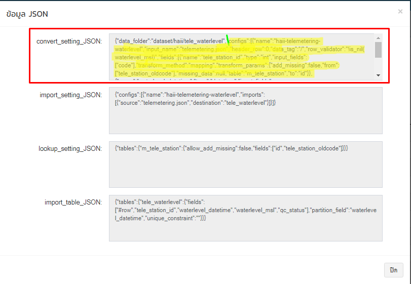

ทดสอบ qc-rule
ตัวอย่างการทดสอบข้อมูลระดับน้ำสสนก.
waterlevel_msl qc-rule ระดับน้ำปัจจุบันต้องไม่มากกว่าระดับน้ำก่อนหน้า 60 ซม.
qc-rule ที่จะทดสอบ
waterlevel_msl <= lookup('cache.latest_waterlevel','value_previous','id',tele_station_id) + 0.6 look up table "cache.latest_waterlevel" ต้องการข้อมูล field "value_previous" โดยหาจาก "id" = "tele_station_id"
- สร้าง folder ตามหน่วยงาน ตามประเภทข้อมูล
src\haii.or.th\dataimport\converter\agency\haii\tele_waterlevel\
ต้องมีโครงสร้างไฟล์ตามรูป

- ไฟล์ config.json copy config จาก backoffice เมนูการตั้งค่า dataset http://web.thaiwater.net/thaiwater30/backoffice/data_integration/mgmt_conv
src\haii.or.th\dataimport\converter\agency\haii\tele_waterlevel\config.json


{ "data_folder": "dataset", "configs": [{ "name": "haii-telemetering-waterlevel", "input_name": "telemetering.json", "header_row": 0, "data_tag": "/", "row_validator": "!is_nil(waterlevel_msl)", "fields": [ { "name": "tele_station_id", "type": "int", "input_fields": [ "code" ], "transform_method": "mapping", "transform_params": { "add_missing": false, "from": [ "tele_station_oldcode" ], "missing_data": null, "table": "m_tele_station", "to": "id" } }, { "name": "waterlevel_datetime", "type": "datetime", "input_fields": [ "date", "time" ], "transform_method": "datetime", "transform_params": { "input_format": "%Y-%m-%d %H:%M" } }, { "name": "waterlevel_msl", "type": "float", "input_fields": [ "water_level" ], "transform_method": "", "transform_params": "" }, { "name": "qc_status", "type": "qc", "input_fields": null, "transform_method": "qc", "transform_params": "" } ] } ] }
- ไฟล์ qc_rule.json ใส่ qc-rule ที่ต้องการทดสอบ ซึ่ง qc-rule group_name,expression จะตรงกับข้อมูลที่จะใส่ใน table public.qc_rule field group_name,expression
src\haii.or.th\dataimport\converter\agency\haii\tele_waterlevel1\testdata\qc_rule.json
[ { "id": 1, "group_name": "waterlevel_msl", "expression": "lookupnil('cache.latest_waterlevel','value_previous','id',tele_station_id) || waterlevel_msl <= lookup('cache.latest_waterlevel','value_previous','id',tele_station_id) + 0.6", "description": "ระดับน้ำปัจจุบัน ต้องไม่มากกว่าระดับน้ำก่อนหน้า 0.6 เมตร if (abs(WL(t) - WL (t-1)) > 60 cm) then QC_Flag (fail)" } ]
*กรณีข้อมูลไม่ครบตามเกณฑ์ ข้อมูล qc_status = false
- กรณี qc-rule มีมีเรียกใช้ func lookup ข้อมูลจาก table อื่น ๆ ให้สร้างไฟล์ lookup และใส่ข้อมูลเพื่อให้ระบบเรียกใช้ func ทำงานได้ถูกต้อง
ตัวอย่างไฟล์ lookup_m_tele_station.json ใช้ในการ mappin tele_station_oldcode จากไฟล์ download เพื่อแปลงเป็น id ตอน convert file
src\haii.or.th\dataimport\converter\agency\haii\tele_waterlevel1\testdata\lookup_m_tele_station.json
{ "column_names": [ "id", "tele_station_oldcode" ], "data": [ [365,"ABRT"], [310,"ACRU"], [514,"ANLI"], [492316,"ATG011"], [492317,"ATG02"], [492340,"ATG021"], [492341,"ATG022"], [492318,"ATG03"], [492342,"ATG031"], [492343,"ATG032"], [492319,"ATG04"], [492344,"ATG041"], [492345,"ATG042"], [492320,"ATG05"], [492346,"ATG051"], [492347,"ATG052"] ] }
ไฟล์สำหรับใส่ข้อมูลทดสอบ qc lookup_cache.latest_waterlevel.json
lookup('cache.latest_waterlevel','value_previous','id',tele_station_id)
ชื่อไฟล์ lookup_[ชื่อ table ที่จะ lookup].json
src\haii.or.th\dataimport\converter\agency\haii\tele_waterlevel1\testdata\lookup_cache.latest_waterlevel.json
{ "column_names": [ "tele_station_id", "id", "value_previous" ], "data": [ [ 128, 128, 22.10 ], [ 238, 238, null ], [ 36, 36, 1.58 ], [ 734, 734, 62.81 ] ] }
- copy file download จาก server converter วางใต้ folder testdata\test1 เพื่อเป็นตัวอย่างข้อมูลที่จะทดสอบ
src\haii.or.th\dataimport\converter\agency\haii\tele_waterlevel1\testdata\test1\dl-20190306005200-telemetering.json
[{ "code": "CHN004", "date": "2019-03-06", "time": "00:40", "temp": "999999", "humid": "999999", "press": "999999", "solar": "127.25", "rain10m": null, "rain1h": null, "raintoday": null, "rain24past": null, "date_rain24past": null, "time_rain24past": null, "water_level": "22.06", "geo_code_basin": 9999 }, { "code": "MUN014", "date": "2019-03-06", "time": "00:40", "temp": "999999", "humid": "999999", "press": "999999", "solar": "123.39", "rain10m": null, "rain1h": null, "raintoday": null, "rain24past": null, "date_rain24past": null, "time_rain24past": null, "water_level": "231.72", "geo_code_basin": 9999 } ]
- สร้าง configuration เพื่อรันโปรแกรมด้วย Eclipse

Arguments
รัน configuration
ถ้า config ทุกไฟล์ถูกต้อง เมื่อรัน configuration ระบบจะแสดงข้อความว่า convert file สำเร็จ
- ผลลัพท์ที่ได้จากการ convert รหัส 128
| ไฟล์ | ข้อมูลที่ใช้ |
|---|---|
| lookup_m_tele_station.json | [128,"CHN004"], |
| testdata\test1\dl-20190306005200-telemetering.json | "code": "CHN004" "water_level": "22.06", |
| testdata\lookup_cache.latest_waterlevel.json | "data": 128,128,22.10 |
ตัวอย่างข้อมูลระดับน้ำในคลอง ข้อมูลจาก กทม.
\src\haii.or.th\dataimport\converter\agency\bma\canal
1|128|2019-03-06T00:40:00+07:00|22.060000|"{""is_pass"":true,""rules"":{""waterlevel_msl"":[{""id"":1,""is_pass"":true}]}}"
ทดสอบเปลี่ยนข้อมูลที่ lookup โดยให้ระดับน้ำก่อนหน้า = 20.10 เพื่อให้ qc_status เป็น false
| ไฟล์ | ข้อมูลที่ใช้ |
|---|---|
| testdata\lookup_cache.latest_waterlevel.json | "data": 128,128,20.10 |
| waterlevel_msl | 22.060000 |
ผลการทดสอบ